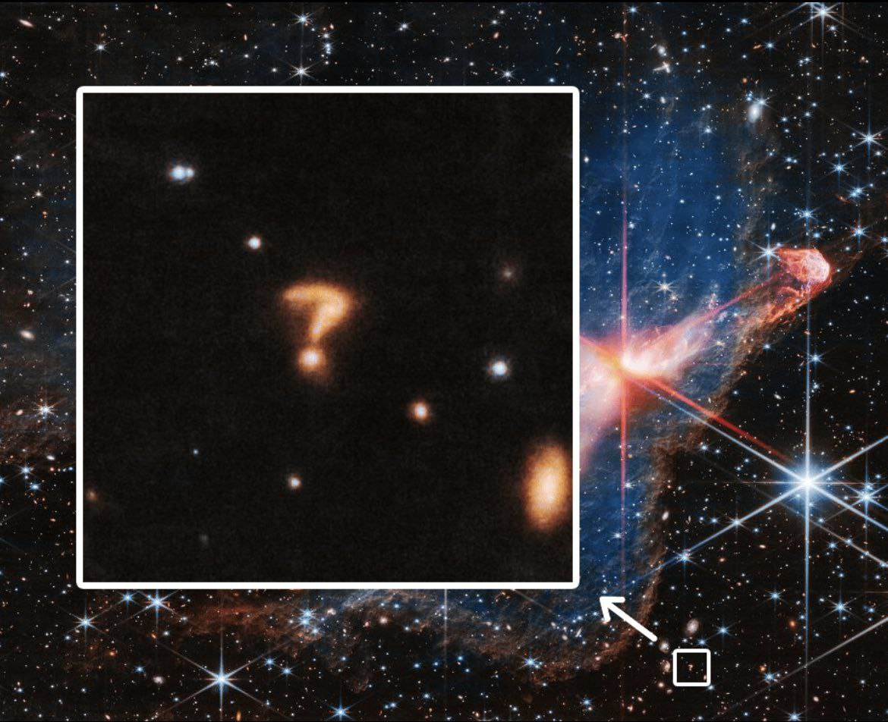

O Instituto de Computação (IComp) é um instituto acadêmico que agrega os professores da área de computação.
Este instituto agrega os professores da área de computação. Como toda unidade acadêmica, o IComp atua no ensino, pesquisa e extensãos.
Telescópio Espacial James Webb observa um ponto de interrogação no espaço profundo. Provavelmente é uma galáxia distante, ou galáxias potencialmente interativas, disseram representantes do Space Telescope Science Institute (STScI) ao Space. com. De acordo com o STScI, a cor vermelha do objeto na imagem JWST diz aos cientistas que o objeto, seja ele qual for, está bastante distante.
Fonte: Astronomiaum
Lista de planetas do Sistema Solar, ordenados segundo as distâncias em relação ao Sol:
Linhas de pesquisa do Programa de Pós-graduação em Informática (PPGI) do Icomp/UFAM:
| linha 1, dado 1 | linha 1, dado 2 |
| linha 2, dado 1 | linha 2, dado 2 |
| Nome | Cargo | |
|---|---|---|
| David F. de Oliveira | Professor Associado | david@icomp.ufam.edu.br |
| Eduardo Souto | Professor Associado | souto@icomp.ufam.edu.br |
| Professores do GPEC | ||